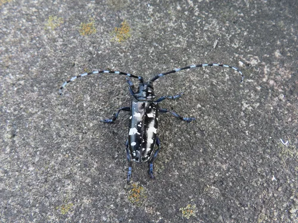
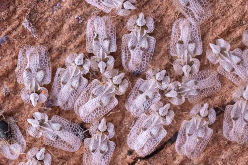

Plant pests

Caterpillars chewing foliageFollow fresh bites to find the larva; inspect folded leaves and the backs of stems.

Pear-shaped insects on shootsCheck young shoots and buds for clusters, cast skins and sticky foliage.

Shell-like bumps on stems or leavesInspect bumps along veins and stems with a lens and distinguish surface shells from the plant tissue.

Oval beetles and chewed leavesPhotograph the wing covers, body shape and the actual feeding site.

Cottony insects in leaf jointsLook into leaf axils for wax-coated insects and sticky honeydew.

Tiny mites and fine webbingInspect the underside for fine webs and moving dots, and the upper surface for pale stippling.

Longhorn beetles and holes in woodInspect wood for holes, debris and declining branches. A visiting adult alone does not confirm larvae in the tree.

Snails and slime trailsOn a damp evening, check pot rims, leaf undersides and nearby hiding places.

Snouted beetles and notched leaf edgesCheck for semicircular notches and inspect plants after dusk for snouted beetles.

Slender insects on buds and leavesTap a bloom gently over white paper and inspect slender insects with a lens. Look for scarring on petals.

Lace-winged bugs and pale stipplingLook underneath stippled leaves for tiny lace-patterned wings and dark specks.

Wedge-shaped jumping insectsDisturb a leaf lightly and watch for sideways jumping. Photograph the body and faded areas of the leaf.